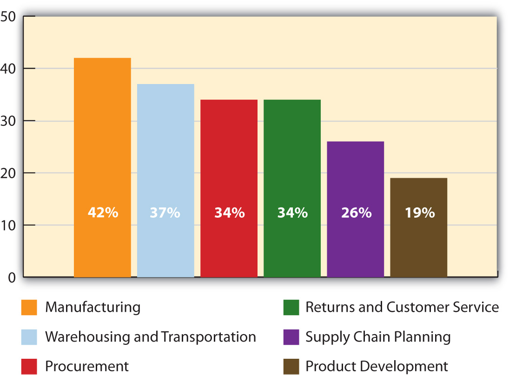
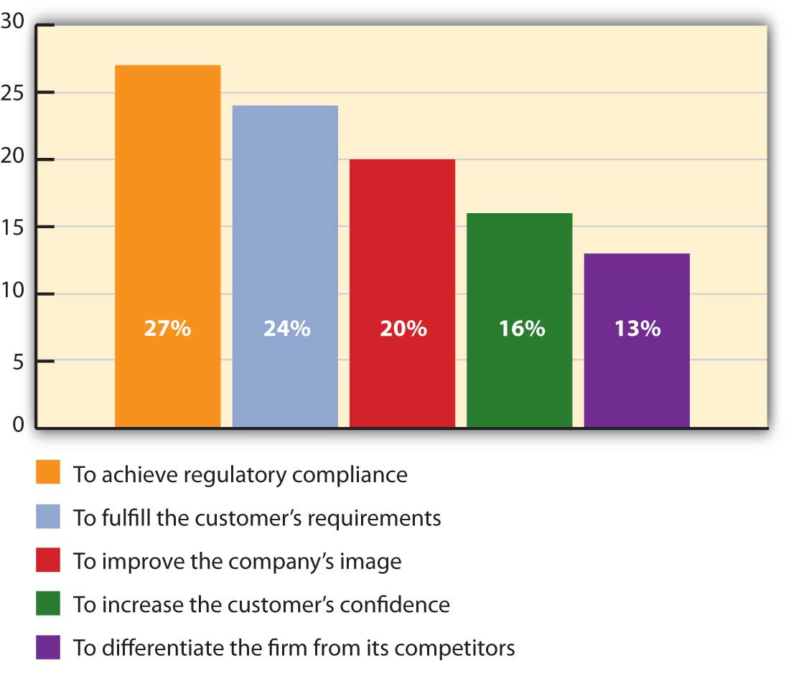
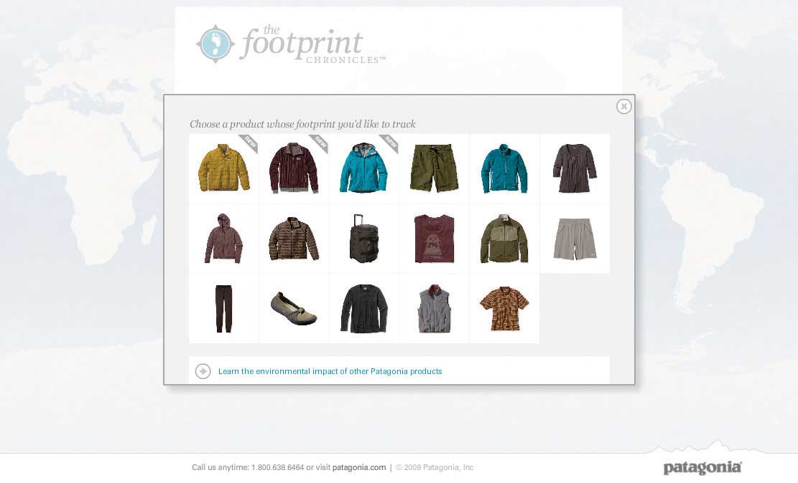

Suppose you have developed a great new product like Ghostbusters: The Video Game. Not only is the game terrific, but you’ve managed to maximize to get it sold in every marketing channel you can. The product is selling at GameStop, Walmart, Best Buy, and Amazon, and it’s slated to come out on Sony’s PlayStation Portable console. That’s the end of the story, right? Not quite. Sooner rather than later, in addition to focusing on the firms “downstream” that sell your product, you will also look “upstream” at your suppliers and “sideways” at potential firms to partner with. It’s only natural. (Or in the case of Ghostbusters: The Video Game, should we say supernatural?)
Who Ya Gonna Call?
(click to see video)Mark Randel, John O’Keefe, and Brendan Goss, the founders of the company that produced the new Ghostbusters video game, say they had to satisfy two types of customers with the product—gamers and fans of the original Ghostbusters movie. Check out the demo.
As we explained in Chapter 8 "Using Marketing Channels to Create Value for Customers", your product’s supply chain includes not only the downstream companies that actively sell the product but also all the other organizations that have an impact on it before, during, and after it’s produced. Those companies include the providers of the raw materials your firm uses to produce it, the transportation company that physically moves it, and the firm that helped build the Web pages to promote it. If you hired a programmer in India to help write computer code for the game, the Indian programmer is also part of the product’s supply chain. If you hired a company to process copies of the game returned by customers, that company is part of the supply chain as well. Large organizations with many products can have literally thousands of supply chain partners. Service organizations also need supplies to operate, so they have supply chains, too.
As you learned at the end of the last chapter, the process of designing, monitoring, and altering supply chains to make them as efficient as possible is called supply chain management. The term supply chain management was first coined by an American industry consultant in the early 1980s, but it’s an old idea. Part of Henry Ford’s strategy in the early 1900s was to extract as much efficiency (and money) as he could by taking ownership of the supply chains for his automobiles. Ford owned the foundries that converted raw iron ore to steel for his cars. He also owned the plantations from which rubber was extracted to produce his automobiles’ tires, and the ships on which the materials and finished products were transported.Donald J. Bowersox and David J. Closs, “Ten Mega-Trends That Will Revolutionize Supply Chain Logistics,” Journal of Business Logistics 21, no. 2 (2000): 1.
Today, many companies still take a narrow view of their supply chains; they look at supply chains mainly in terms of the costs they can save. Cost reduction is definitely an important part of supply chain management. After all, if your competitors can produce their products at a lower cost, they could put you out of business.
Keep in mind, however, that a firm can produce a product so cheaply that no one will buy it because it’s shoddy. That’s why smart companies view their supply chains as an integral part of their marketing plans. In other words, these companies also look at the ways their supply chains can create value for customers so as to give their firms a competitive edge.
Today, the term value chainA term that is sometimes used interchangeably with the term supply chain. The idea behind the value chain is that your supply chain partners should do more for you than perform just basic functions. is sometimes used interchangeably with the term supply chain. The idea behind the value chain is that your supply chain partners should do more for you than perform just basic functions; each one should help you create more value for customers as the product travels along the chain—preferably more value than your competitors’ supply chain partners can add to their products.
Zara, a trendy but inexpensive clothing chain in Europe, is a good example of a company that has managed to create value for its customers with smart supply chain design and execution. Originally, it took six months for Zara to design a garment and get it delivered to stores. To get the hottest fashions in the hands of customers as sooner, Zara began working more closely with its supply chain partners and internal design teams. It also automated its inventory systems so it could quickly figure out what was selling and what was not. As a result, it’s now able to deliver its customers the most cutting-edge fashion in just two weeks. Not only that, but the company set a new standard for the clothing industry in the process.Jeremy N. Smith, “Fast Fashion,” World Trade 21, no. 12 (2008): 54.
SourcingThe process of evaluating and hiring individual businesses to supply goods and services to your organization. is the process of evaluating and hiring individual businesses to supply goods and services to your business. ProcurementThe process of purchasing goods and services for your organization. is the process of actually purchasing those goods and services. Sourcing and procurement have become a bigger part of a supply manager’s job in recent years, in part because businesses keep becoming more specialized. Just like Ford’s workers became more efficient by performing specialized tasks, so, too have companies.
Ford Motor Company no longer produces its own tires for its cars. It buys them from tire producers like Michelin and Goodyear. It’s still possible to “own” your supply chain, though. The diamond company DeBeers owns its own mines, distributorships, and retail diamond stores. The problem is that it’s very costly to own multiple types of companies and difficult to run them all well, too.
Firms look up and down their supply chains and outside them to see which companies can add the most value to their products at the least cost. If a firm can find a company that can add more value than it can to a function, it will often outsourceHiring an organization to do a task your firm previously performed. the task to that company. After all, why do something yourself if someone else can do it better or more cost-effectively?
Rather than their own fleets of trucks, ships, and airplanes, most companies outsource at least some of their transportation tasks to shippers such as Roadway and FedEx. Other companies hire freight forwarders to help them. You can think of freight forwardersAn organization whose duties include consolidating small loads of freight, negotiating rates for their shipment, and booking space for them on transportation vehicles and in warehouses. as travel agents for freight.Skip McGrath, “China Shipping Advice,” Smart China Sourcing, December 14, 2007, http://www.smartchinasourcing.com/shipping/china-shipping-advice-cif-shipping-terms-explained.html (accessed April 13, 2012). Their duties include negotiating rates for shipments and booking space for them on transportation vehicles and in warehouses. A freight forwarder also combines small loads from various shippers into larger loads that can be shipped by more economically. However, it doesn’t own its own transportation equipment or warehouses.
Other companies go a step further and outsource their entire order processing and shipping departments to third-party logistics (3PLs) firmsFirms to which other companies outsource their entire order processing and shipping departments.. FedEx Supply Chain Services and UPS Supply Chain Solutions (which are divisions of FedEx and UPS, respectively) are examples of 3PLs. A 3PL is one-stop shipping solution for a company that wants to focus on other aspects of its business. Firms that receive and ship products internationally often hire 3PLs so they don’t have to deal with the headaches of transporting products abroad and completing import and export paperwork for them.
Beginning in the 1990s, companies began to outsource a lot of other activities besides transportation.Skip McGrath, “China Shipping Advice,” Smart China Sourcing, December 14, 2007, http://www.smartchinasourcing.com/shipping/china-shipping-advice-cif-shipping-terms-explained.html (accessed April 13, 2012). Their goal was twofold: (1) to lower their costs and (2) to focus on the activities they do best. You might be surprised by the functions firms outsource. In fact, many “producers” of products no longer produce them at all but outsource their production instead.
Most clothing companies, including Nike, design products, but they don’t make them. Instead, they send their designs to companies in nations with low labor costs. Likewise, many drug companies no longer develop their own drugs. They outsource the task to smaller drug developers, which in recent years have had a better track record of developing best-selling pharmaceuticals. The Crest SpinBrush (toothbrush) wasn’t developed by Procter & Gamble, the maker of Crest. A small company called Church & Dwight Co. developed the technology for the SpinBrush, and P&G purchased the right to market and sell the product.
Outsourcing work to companies abroad is called offshoringOutsourcing work to a company abroad.. Figure 9.2 "Percentage of Supply Chain Functions Offshored in 2008" shows the percentage of supply chain functions three hundred global manufacturers and service organizations say they now offshore and the percentages these organizations expect to offshore by 2010.
Figure 9.2 Percentage of Supply Chain Functions Offshored in 2008Adapted from PRTM Management Consultants, “Global Supply Chain Trends 2008–2010,” http://www.prtm.com/uploadedFiles/Strategic_Viewpoint/Articles/Article_Content/Global_Supply_Chain_Trends_Report_%202008.pdf (accessed December 2, 2009).
A company faces a number of tradeoffs when it outsources an activity. The loss of control—particularly when it comes to product quality and safety—is one of them. Just ask Mattel. Beginning in 2007, Mattel was forced to recall tens of millions of toys it had outsourced for production because they were tainted with lead. But Mattel isn’t the only company to experience problems. In a recent global survey, more than one-fifth of the companies that outsource their production said they have experienced “frequent” and “serious” quality problems.PRTM Management Consultants, “Global Supply Chain Trends 2008–2010,” http://www.prtm.com/uploadedFiles/Strategic_Viewpoint/Articles/Article_Content/Global_Supply_Chain_Trends_Report_%202008.pdf (accessed December 2, 2009).
The U.S. Consumer Products Safety Commission randomly inspects products, but there is no way the commission’s personnel can begin to test them all. To protect their customers, many companies either test their suppliers’ products themselves or contract with independent labs to do so. For example, if you sell a product to Walmart, you need to be prepared to send it to such a lab, should Walmart ask you to.“Quality Assurance through Testing,” Walmartstores.com, http://walmartstores.com/Suppliers/248.aspx (accessed December 2, 2009). Companies also do on-site audits, or checks, of their suppliers. Other companies station employees with their suppliers on a permanent basis to be sure that the quality of the products they’re producing is acceptable.
The loss of control of their technology is another outsourcing risk that companies face. Some countries are better about protecting patented technologies and designs than others, and some supply chain partners are more trustworthy than others. How can you be sure your supply chain partner won’t steal your technology? A few years ago, General Motors began working with a Chinese firm to produce a car called the Spark for the Chinese market. But before GM could even get the automobile plant up and running, the U.S. automaker alleged that the design of the car had been stolen, sold to another company, and knockoffs of it were being driven around China’s streets.Bureau of International Information Programs, U.S. Department of State, “China Pressed to Forcefully Attack Intellectual Property Theft,” America.gov, January 13, 2005, http://www.america.gov/st/washfile-english/2005/January/20050113180002asesuark0.9782831.html#ixzz0Mada2mLk (accessed December 2, 2009).
Another aspect of outsourcing relates to the social responsibility and environmental sustainability companies exhibit in terms of how they manage their supply chains. Social responsibilityThe idea that companies should manage their businesses not just to earn profits but to advance the well-being of society. is the idea that companies should manage their businesses not just to earn profits but to advance the well-being of society. Both issues are becoming increasingly important to consumers. Environmental sustainabilityThe idea that firms should engage in business practices that have the least impact on the environment so that it is sustained for future generations. is the idea that firms should engage in business practices that have the least impact on the environment so that it’s sustained for future generations.
To demonstrate to consumers they are socially responsible, Starbucks and other companies have joined the Fair Trade movement. Members of the Fair Trade movement pay farmers and other third-world producers higher prices for their products so they don’t have to live in poverty. The prices consumers pay for products with fair-trade labels are often higher, but one Harvard study has showed that consumers expect them to be and that sales actually increased when the prices of them went up.Jeff Chu, “Are Fair-Trade Goods Recession Proof?” Fast Company, March 27, 2009, http://www.organicconsumers.org/articles/article_17395.cfm (accessed December 2, 2009).
The push for environmental sustainability is also having an impact on supply chains, partly because the stricter environmental laws in many counties are demanding it. But companies are seeing the upside of producing “greener” products and disposing of them in ethical ways. First, it improves a company’s image and makes it stand out among its competitors. Second, many consumers are willing to pay more for green products, even during a recession.John Birchall, “Greener Apple Helps Clean Up,” Financial Times, March 24, 2009, 11. Walmart recently announced that it’s planning to require its suppliers to measure the environmental costs of producing their products. The “green” ratings will then be put on the products labels.Steve Rosen, “Wal-Mart to Create Green Index to Rate Products,” Kansas City Star, July 15, 2009, http://economy.kansascity.com/?q=node/2844 (accessed December 2, 2009). Figure 9.3 "Why Firms Say They Are “Going Green” with Their Supply Chains" shows the reasons why firms “go green” with their supply chains.
Figure 9.3 Why Firms Say They Are “Going Green” with Their Supply ChainsAdapted from PRTM Management Consultants, “Global Supply Chain Trends 2008–2010,” http://www.prtm.com/uploadedFiles/Strategic_Viewpoint/Articles/Article_Content/Global_Supply_Chain_Trends_Report_%202008.pdf (accessed December 2, 2009).
The outdoor clothing company Patagonia takes both social responsibility and environmental sustainability seriously. Patagonia tries to design, source, produce, and recycle its products so they cause the least environmental damage possible. The company also audits it supply chain partners to ensure they treat workers fairly.
Hewlett-Packard = Hazardous Products
(click to see video)Not going green can be hazardous to a company’s reputation. After Hewlett-Packard (HP) broke a promise to eliminate toxic materials in its computers by 2009, Greenpeace activists painted the words “Hazardous Products” on the roof of the company’s headquarters in Palo Alto, California. Meanwhile, a voicemail message from Star Trek actor William Shatner was delivered to all the phones in the building. “Please ask your leader [HP CEO Mark Hurd]” to make computers that are toxin free like Apple has done, Shatner said in the message. You can hear the message by going to the following link: http://www.greenpeace.org/international/news/hp-reminder-28-07-09. An HP spokesman said that eliminating the toxic materials would have disrupted the company’s supply chain.
One of the drawbacks of outsourcing is the time it takes for products to make their way to the United States and into the hands of consumers. The time it takes is a big issue because it affects how responsive a company is to its customers. Retailers don’t like to wait for products. Waiting might mean their customers will shop elsewhere if they can’t find what they want. As we explained in Chapter 8 "Using Marketing Channels to Create Value for Customers", for this reason and others, some companies are outsourcing their activities closer to home.
Figure 9.4
Click on the link below to track the environmental and social impact of Patagonia’s various products throughout the supply chain—from their design to their delivery: http://www.patagonia.com/web/us/footprint/index.jsp.
When firms that can’t resolve their supplier problems, they find other suppliers to work with or they move the activities back in-house, which is a process called insourcingWhen firms move activities, such as logistics, in-house.. Insourcing can actually help set your company apart these days. The credit card company Discover doesn’t outsource its customer service to companies abroad. Perhaps that helps explain why one survey ranked Discover number one in customer loyalty.
Your customer should ultimately be the focus of any insourcing and outsourcing decision you make. After all, unless the product gets recycled, the customer is the last link in the supply chain. Not all customers have the same product and service requirements, though. It might be acceptable for a company that sells PCs to individual consumers to outsource its tech support, perhaps to a firm in India that can perform the function at lower cost. However, a company that buys an expensive, customized computer network is probably going to want to deal directly with the maker of the product if the network goes down—not another company in another country.
Similarly, if you’re producing an expensive car for Ferrari-type buyers, purchasing bargain-basement-priced parts could leave your customers dissatisfied—especially if the parts fail and their cars break down. Conversely, if you’re designing a low-end automobile, top-of-the-line parts could make it too expensive for low-end buyers. High-end car buyers are likely to demand better after-sales service than low-end car buyers, too.
Sourcing is the process of evaluating and hiring individual businesses to supply goods and services to your business. Procurement is the process of actually purchasing those goods and services. Sourcing and procurement have become a bigger part of a supply manager’s job in recent years, in part because businesses keep becoming more specialized. Companies outsource activities to lower their costs to focus on the activities they do best. Companies face numerous tradeoffs when they outsource activities, which can include a loss of control and product-quality and safety problems. When firms that can’t resolve their supplier problems, they find other suppliers to work with or they move the activities back in-house, which is a process called insourcing. Customer should be the focus of any insourcing and outsourcing decisions companies make.
Imagine you are a marketing manager who has done everything in your power to help develop and promote a product—and it’s selling well. But now your company is running short of the product because the demand forecasts for it were too low. Recall that this is the scenario Nintendo faced when the Wii first came out. The same thing happened to IBM when it launched the popular ThinkPad laptop in 1992.
Not only is the product shortage going to adversely affect the profitably of your company, but it’s going to adversely affect you, too. Why? Because you, as a marketing manager, probably earn either a bonus or commission from the products you work to promote, depending on how well they sell. And, of course, you can’t sell what you don’t have.
As you can probably tell, the best marketing decisions and supplier selections aren’t enough if your company’s demand forecasts are wrong. Demand planningThe process of estimating how much of a good or service customers will buy from you. is the process of estimating how much of a good or service customers will buy from you. If you’re a producer of a product, this will affect not only the amount of goods and services you have to produce but also the materials you must purchase to make them. It will also affect your production schedulingThe management of the resources, events, and processes need to create an offering., or the management of the resources, events, and processes need to create an offering. For example, if demand is heavy, you might need your staff members to work overtime. Closely related to demand forecasting are lead times. A product’s lead timeThe amount of time it takes for a customer to receive a good or service once it’s been ordered. is the amount of time it takes for a customer to receive a good or service once it’s been ordered. Lead times also have to be taken into account when a company is forecasting demand.
Sourcing decisions—deciding which suppliers to use—are generally made periodically. Forecasting decisions must be made more frequently—sometimes daily. One way for you to predict the demand for your product is to look at your company’s past sales. This is what most companies do. But they don’t stop there. Why? Because changes in many factors—the availability of materials to produce a product and their prices, global competition, oil prices (which affect shipping costs), the economy, and even the weather—can change the picture.
For example, when the economy hit the skids in 2008, the demand for many products fell. So if you had based your production, sales, and marketing forecasts on 2007 data alone, chances are your forecasts would have been wildly wrong. Do you remember when peanut butter was recalled in 2009 because of contamination? If your firm were part of the supply chain for peanut butter products, you would have needed to quickly change your forecasts.
The promotions you run will also affect demand for your products. Consider what happened to KFC when it first came out with its new grilled chicken product. As part of the promotion, KFC gave away coupons for free grilled chicken via Oprah.com. Just twenty-four hours after the coupons were uploaded to the Web site, KFC risked running out of chicken. Many customers were turned away. Others were given “rain checks” (certificates) they could use to get free grilled chicken later.Joe Weisenthal, “Slammed KFC ‘Scrambling to Source More Chicken,’” The Business Insider, May 6, 2009, http://www.businessinsider.com/kfc-2009-5 (accessed December 2, 2009).
In addition to looking at the sales histories of their firms, supply chain managers also consult with marketing managers and sales executives when they are generating demand forecasts. Sales and marketing personnel know what promotions are being planned because they work more closely with customers and know what customers’ needs are and if those needs are changing.
Firms also look to their supply chain partners to help with their demand planning. Collaborative planning, forecasting, and replenishment (CPFR)A practice whereby supply chain partners share information and coordinate their operations. is a practice whereby supply chain partners share information and coordinate their operations. Walmart has developed a Web-based CPFR system called Retail Link. Retailers can log into Retail Link to see how well their products are selling at various Walmart stores, how soon more products need to be shipped to the company and where, how any promotions being run are affecting the profitability of their products, and so forth. Because different companies often use different information technology systems and software, Web-based tools like Retail Link are becoming a popular way for supply chain partners to interface with one another.
Not all firms are wild about sharing every piece of information they can with their supply chains partners. Some retailers view their sales information as an asset—something they can sell to information companies like Information Resources, Inc., which provides competitive data to firms that willing to pay for it.Donald J. Bowersox and David J. Closs, “Ten Mega-Trends That Will Revolutionize Supply Chain Logistics,” Journal of Business Logistics 21, no. 2 (2000): 11. By contrast, other firms go so far as to involve their suppliers before even producing a product so they can suggest design changes, material choices, and production recommendations.
Take a Test Drive of the Tata Nano
(click to see video)Priced at about $2,500 the Tata Nano is the least expensive car ever produced in the world. To make a safe, reliable car at such a low cost, Tata Motors, an Indian company, sought new, innovative design approaches from its suppliers. The elimination of one of the car’s two windshield wipers was one result of the collaboration that occurred between Tata and its supply chain partners.Steven Wingett, “Capro, Saint-Gobain, Denso Win Big with Tata Nano,” Automotive News Europe, March 3, 2008, 16.
The trend is clearly toward more shared information, or what businesspeople refer to as supply chain visibilityA situation in which supply chain partners share information with one another so they can see how well the chain is working.. After all, it makes sense that a supplier will be not only more reliable but also in a better position to add value to your products if it knows what your sales, operations, and marketing plans are—and what your customers want. By sharing more than just basic transaction information, companies can see how well operations are proceeding, how products are flowing through the chain, how well the partners are performing and cooperating with one another, and the extent to which value is being built in to the product.
Demand-planning software can also be used to create more accurate demand forecasts. Demand-planning softwareSoftware that can synthesize a variety of factors to better predict a firm’s demand. can synthesize a variety of factors to better predict a firm’s demand—for example, the firm’s sales history, point-of-sale data, warehouse, suppliers, and promotion information, and economic and competitive trends. So a company’s demand forecasts are as up-to-date as possible, some of the systems allow sales and marketing personnel to input purchasing information into their mobile devices after consulting with customers.
Litehouse Foods, a salad dressing manufacturer, was able to improve its forecasts dramatically by using demand-planning software. Originally the company was using a traditional sales database and spreadsheets to do the work. “It was all pretty much manual calculations. We had no engine to do the heavy lifting for us,” says John Shaw, the company’s Information Technology director. In a short time, the company was able to reduce its inventory by about one-third while still meeting its customers’ needs.Carol Casper, “Demand Planning Comes of Age,” Food Logistics 101 (January/February 2008): 19–24.
Demand forecasting is part of a company’s overall inventory control activities. Inventory controlThe process of ensuring your firm has an adequate amount of products and a wide enough assortment of them meet your customers’ needs. is the process of ensuring your firm has an adequate supply of products and a wide enough assortment of them meet your customers’ needs. One of the goals of inventory management is to avoid stockouts. A stockoutA situation that occurs when a firm runs out of a product a customer wants to buy. occurs when you run out of a product a customer wants to buy. Customers will simply look elsewhere to buy the product—a process the Internet has made easier than ever.
When the attack on the World Trade Center occurred, many Americans rushed to the store to buy batteries, flashlights, American flags, canned goods, and other products in the event that the emergency signaled a much bigger attack. Target sold out of many items and could not replenish them for several days, partly because its inventory tracking system only counted up what was needed at the end of the day. Walmart, on the other hand, took count of what was needed every five minutes. Before the end of the day, Walmart had purchased enough American flags, for example, to meet demand and in so doing, completely locked up all their vendors’ flags. Meanwhile, Target was out of flags and out of luck—there were no more to be had.
To help avoid stockouts, most companies keep a certain amount of safety stock on hand. Safety stockBackup inventory that serves as a buffer in case the demand for a product surges or the supply of it drops off for some reason. is backup inventory that serves as a buffer in case the demand for a product surges or the supply of it drops off for some reason. Maintaining too much inventory, though, ties up money that could be spent other ways—perhaps on marketing promotions. Inventory also has to be insured, and in some cases, taxes must be paid on it. Products in inventory can also become obsolete, deteriorate, spoil, or “shrink.” ShrinkageA term used to describe a reduction or loss in inventory due to shoplifting, employee theft, paperwork errors, and supplier fraud. is a term used to describe a reduction or loss in inventory due to shoplifting, employee theft, paperwork errors, or supplier fraud.Shari Waters, “Shrinkage,” About.com, http://retail.about.com/od/glossary/g/shrinkage.htm (accessed December 2, 2009).
When the economy went into its most recent slide, many firms found themselves between a rock and a hard place in terms of their inventory levels. On the one hand, because sales were low, firms were reluctant to hold much safety stock. Many companies, including Walmart, cut the number of brands they sold in addition to holding a smaller amount of inventory. On the other hand, because they didn’t know when business would pick up, they ran the risk of running out of products. Many firms dealt with the problem by maintaining larger amounts of key products. Companies also watched their supply chain partners struggle to survive. Forty-five percent of firms responding to one survey about the downturn reported providing financial help to their critical supply chain partners—often in the form of credit and revised payment schedules.PRTM Management Consultants, “Global Supply Chain Trends 2008–2010,” http://www.prtm.com/uploadedFiles/Strategic_Viewpoint/Articles/Article_Content/Global_Supply_Chain_Trends_Report_%202008.pdf (accessed December 2, 2009).
To lower the amount of inventory and still maintain they stock they need to satisfy their customers, some organizations use just-in-time inventory systemsA system in which a firm keeps very little inventory on hand. Instead, its suppliers ship it inventory as needed. in both good times and bad. Firms with just-in-time inventory systems keep very little inventory on hand. Instead, they contract with their suppliers to ship them inventory as they need it—and even sometimes manage their inventory for them—a practice called vendor-managed inventory (VMI)The practice of having your suppliers monitor your inventory levels.. Dell is an example of a company that utilizes a just-in-time inventory system that’s vendor managed. Dell carries very few component parts. Instead, its suppliers carry them. They are located in small warehouses near Dell’s assembly plants worldwide and provide Dell with parts “just-in-time” for them to be assembled.Sameer Kumar and Sarah Craig, “Dell, Inc.’s Closed Loop Supply Chain for Computer Assembly Plants,” Information Knowledge Systems Management 6, no. 3 (2007): 197–214.
Dell’s inventory and production system allows customers to get their computers built exactly to their specifications, a production process that’s called mass customizationMass producing goods customized to the specifications of individual consumers.. This helps keep Dell’s inventory levels low. Instead of a huge inventory of expensive, already-assembled computers consumers may or may not buy, Dell simply has the parts on hand, which can be configured or reconfigured should consumers’ preferences change. Dell can more easily return the parts to its suppliers if at some point it redesigns its computers to better match what its customers want. And by keeping track of its customers and what they are ordering, Dell has a better idea of what they might order in the future and the types of inventory it should hold. Because mass customization lets buyers “have it their way,” it also adds value to products, for which many customers are willing to pay.
Some companies, including Walmart, are beginning to experiment with new technologies such as electronic product codes in an effort to better manage their inventories. An electronic product code (EPC)A barcode that can distinguish between two seemingly identical products. It contains information about where the product was manufactured and where it was shipped from and bound to. is similar to a barcode, only better, because the number on it is truly unique. You have probably watched a checkout person scan a barcode off of a product identical to the one you wanted to buy—perhaps a pack of gum—because the barcode on your product was missing or wouldn’t scan. Electronic product codes make it possible to distinguish between two identical packs of gum. The codes contain information about when the packs of gum were manufactured, where they were shipped from, and where they were going to. Being able to tell the difference between “seemingly” identical products can help companies monitor their expiration dates if they are recalled for quality of safety reasons. EPC technology can also be used to combat “fake” products, or knockoffs, in the marketplace.
The Basics of RFID and EPC Technology
(click to see video)To understand how EPC and RFID technology can help marketers, watch this YouTube video.
Electronic product codes are stored on radio-frequency identification (RFID) tags. A radio-frequency identification (RFID) tagA tag that emits radio signals that can record and track a shipment as it comes in and out of a facility. emits radio signals that can record and track a shipment as it comes in and out of a facility. If you have unlocked your car door remotely, microchipped your dog, or waved a tollway tag at a checkpoint, you have used RFID technology.“FAQs,” EPCglobal, http://www.epcglobalinc.org/consumer_info/faq (accessed December 2, 2009). Because each RFID tag can cost anywhere from $0.50 to $50 each, they are generally used to track larger shipments, such cases and pallets of goods rather than individual items. See Figure 9.8 "How RFID Tagging Works" to get an idea of how RFID tags work.
Figure 9.8 How RFID Tagging Works

Some consumer groups worry that RFID tags and electronic product codes could be used to track their consumption patterns or for the wrong purposes. But keep in mind that like your car-door remote, the codes and tags are designed to work only within short ranges. (You know that if you try to unlock your car from a mile away using such a device, it won’t work.)
Proponents of electronic product codes and RFID tags believe they can save both consumers and companies time and money. These people believe consumers benefit because the information embedded in the codes and tags help prevent stockouts and out-of-date products from remaining on store shelves. In addition, the technology doesn’t require cashiers to scan barcodes item by item. Instead an electronic product reader can automatically tally up the entire contents of a shopping cart—much like a wireless network can detect your computer within seconds. As a customer, wouldn’t that add value to your shopping experience?
The best marketing decisions and supplier selections aren’t enough if your company’s demand forecasts are wrong. Demand forecasting is the process of estimating how much of a good or service a customer will buy from you. If you’re a producer of a product, this will affect not only the amount of goods and services you have to produce but also the materials you must purchase to make them. Demand forecasting is part of a company’s overall inventory control activities. Inventory control is the process of ensuring your firm has an adequate amount of products and a wide enough assortment of them meet your customers’ needs. One of the goals of inventory control is to avoid stockouts without keeping too much of a product on hand. Some companies are beginning to experiment with new technologies such as electronic product codes and RFID tags in an effort to better manage their inventories and meet their customers’ needs.
At times, the demand and supply for products can be unusually high. At other times, it can be unusually low. That’s why companies generally maintain a certain amount of safety stock, oftentimes in warehouses. As a business owner, it would be great if you didn’t have excess inventory you had to store in a warehouse. In an ideal world, materials or products would arrive at your facility just in time for you to assemble or sell them. Unfortunately, we don’t live in an ideal world.
Toys are a good example. Most toymakers work year round to be sure they have enough toys available for sale during the holidays. However, retailers don’t want to buy a huge number of toys in July. They want to wait until November and December to buy large amounts of them.
Consequently, toymakers warehouse them until that time. Likewise, during the holiday season, retailers don’t want to run out of toys, so they maintain a certain amount of safety stock in their warehouses.
Some firms store products until their prices increase. Oil is an example. Speculators, including investment banks and hedge funds, have been known to buy, and hold, oil if they think its price is going to rapidly rise. Sometimes they go so far as to buy oil tankers and even entire oil fields.Robert Winnett, “Soaring Prices: Speculators Hijack the Oil Market,” TimesOnline, September 12, 2004, http://business.timesonline.co.uk/tol/business/article481363.ece (accessed December 2, 2009).
A distribution centerA warehouse or storage facility where the emphasis is on processing and moving goods on to wholesalers, retailers, or consumers rather than on storage. is a warehouse or storage facility where the emphasis is on processing and moving goods on to wholesalers, retailers, or consumers.“Distribution Center,” Wikipedia.org, http://en.wikipedia.org/wiki/Distribution_center (accessed April 13, 2012). A few years ago, companies were moving toward large, centralized warehouses to keep costs down. In 2005, Walmart opened a four-million-square-foot distribution center in Texas. (Four million square feet is about the size of eighteen football fields.)
Today, however, the trend has shifted back to smaller warehouses. Using smaller warehouses is a change that’s being driven by customer considerations rather than costs. The long lead times that result when companies transport products from Asia, the Middle East, and South America are forcing international manufacturers and retailers to shorten delivery times to consumers.Sara Pearson Specter, “Industry Outlook: Mostly Cloudy, with a Few Bright Spots,” Modern Materials Handling 64, no. 3 (2009): 22–26. Warehousing products regionally, closer to consumers, can also help a company tailor its product selection to better match the needs of customers in different regions.
So how do you begin to find a product or pallet of products in a warehouse or distribution center the size of eighteen football fields? To begin with, each type of product that is unique because of some characteristic—say, because of its manufacturer, size, color, or model—must be stored and accounted for separate from other items. To help distinguish it, its manufacturer gives it its own identification number, called a SKU (stock-keeping unit)A label used to distinguish a product that is unique because of some characteristic, such as manufacturer, size, color, or model..“Stock-Keeping Unit (SKU),” BusinessDictionary.com, http://www.businessdictionary.com/definition/stock-keeping-unit-SKU.html (accessed December 2, 2009). Figure 9.10 "An Example of an SKU" shows an example of a SKU that appears on a box of products. When the product enters the warehouse, it is scanned and given an “address,” or location, in the warehouse where it is stored until it is plucked from its shelf and shipped.
Warehouses and distribution centers are also becoming increasingly automated and wired. As you learned in Chapter 8 "Using Marketing Channels to Create Value for Customers", some warehouses use robots to picks products from shelves. At other warehouses, employees use voice-enabled headsets to pick products. Via the headsets, the workers communicate with a computer that tells them where to go and what to grab off of shelves. As a result, the employees are able to pick products more accurately than they could by looking at a sheet of paper or computer screen.
The process we just described is an extremely simple explanation of a very complicated operation. The following video shows how one of Amazon.com’s distribution centers works.
Order Fulfillment at Amazon
(click to see video)Amazon.com’s mission is “to be Earth’s most customer-centric company where people can find and discover anything they want to buy online.” Watch the following video to see one of Amazon’s order-fulfillment centers in action.
It’s pretty amazing when you think about how the thousands of products that come in and out of Amazon’s distribution centers every day ultimately end up in the right customer’s hands. After all, how many times have you had to look really hard to find something you put in your own closet or garage? Processing orders—order fulfillment—is a key part of the job in supply chains. Why? Because delivering what was promised, when it was promised, and the way it was promised are key drivers of customer satisfaction.Sriram Thirumalai and Kingshuk K. Sinha, “Customer Satisfaction with Order Fulfillment in Retail Supply Chains: Implications of Product Type in Electronic B2C Transactions,” Journal of Operations Management 23, no. 3–4 (2005): 291–303.
One of the ways companies are improving their order fulfillment and other supply chain processes is by getting rid of paper systems and snail mail. So, for instance, instead of companies receiving paper orders and sending paper invoices to one another, they send and receive the documents via electronic data interchange (EDI). Electronic data interchange (EDI)A special electronic format companies use to exchange business documents from computer to computer. is a special electronic format that companies use to exchange business documents from computer to computer. It also makes for greater visibility among supply chain partners because they can all check the status of orders electronically rather than having to fax or e-mail documents back and forth.
Figure 9.11 How Cross-Docking Works

Another new trend is cross-dockingThe practice of moving products between supply chain intermediaries so that they spend little or no time in warehouses as they are transported.. Products that are cross-docked spend little or no time in warehouses. As Figure 9.11 "How Cross-Docking Works" shows, a product being cross-docked will be delivered via truck to a dock at a warehouse where it is unloaded and put on other trucks bound for retail outlets.
Not all goods and services need to be physically transported. When you get a massage, oil change, or a manicure, the services pass straight from the provider to you. Other products can be transported electronically via electronic networks, computers, phones, or fax machines. Downloads of songs, software, and books are an example. So are cable and satellite television and psychic hotline readings delivered over the phone.
Motorbike Delivery
(click to see video)The types of delivery vehicles used around the world might surprise you.
Other products, of course, have to be physically shipped. LogisticsThe physical flow of materials in the supply chain. refers to the physical flow of materials in the supply chain. You might be surprised by some of physical distribution methods that companies use. To get through crowded, narrow streets in Tokyo, Seven-Eleven Japan delivers products to its retail stores via motorcycles. In some countries, Coca-Cola delivers syrup to its bottlers via camelback. More commonly, though, products that need to be transported physically to get to customers are moved via air, rail, truck, water, or pipeline.
More products are shipped by truck than by another means. Trucks can go anywhere there are roads, including straight to customer’s homes. By contrast, planes, trains, and ships are limited as to where they can go. Shipping by truck is also fast relative to other modes (except for air transportation). However, it’s also fairly expensive. Some goods—especially those that are heavy or bulky—would require so many trucks and drivers it would be economically unfeasible to use them over long distances. Coal is a good example of such a product. It would take four to five hundred trucks and drivers to haul the amount of freight that one coal train can. The amount of CO2 emitted by trucks is also high relative to some of the other transportation modes, so it’s not the greenest solution.
International trade could scarcely be conducted without cargo shipping. Cargo ships transport “loose” cargo such as grain, coal, ore, petroleum, and other mined products. But they also transport consumer products—everything from televisions to toys. Consumer goods are often shipped in intermodal containers. Intermodal containersMetal boxes used to ship consumer goods. are metal boxes. The largest containers are fifty-three feet long and one hundred inches tall. The biggest cargo ships are huge and carry as many 15,000 containers. By contrast, the maximum a train can carry is around 250 containers stacked on top of each other. Figure 9.12 shows a picture of a cargo ship carrying intermodal containers. The good news about shipping via waterway is that inexpensive. The bad news is that it’s very slow. In addition, many markets aren’t accessible by water, so another method of transportation has to be utilized.
Air freight is the fastest way to ship goods. However, it can easily cost ten times as much to ship a product by air as by sea.James F. Thompson, C. F. H. Bishop, and Patrick E. Brecht, “Air Transport of Perishable Products,” Division of Agriculture and Natural Resources, University of California, Publication 2168 (Oakland: ANR Communication Services): 1. High-dollar goods and a small fraction of perishable goods are shipped via air. Freshly cut flowers and fresh seafood bound for sushi markets are examples of the latter. Keeping perishable products at the right temperature and humidity levels as they sit on runways and planes can be a challenge. They often have to be shipped in special types of containers with coolants. Freight forwarders are often hired to arrange the packing for perishables traveling by air and to ensure they don’t deteriorate while they are in transit. Despite the fact that it is expensive, air transportation is growing faster than any other transportation mode, thanks to companies like FedEx.
Railroads carry many of the same products as cargo ships—only over land. A significant percentage of intermodal containers offloaded from ships end up on railcars bound for inland destinations. The containers are then are trucked shorter distances to distribution centers, warehouses, and stores. Businesses that need to ship heavy, bulky goods often try to locate their facilities next to railroads. Lumber mills are an example.
In terms of speed and cost, shipping by rail falls somewhere between truck and water transportation. It’s not as slow and inexpensive as moving goods by water. However, it’s not as fast as shipping them by truck. Nor is it as expensive. So, when the price of gasoline rose in to record highs in 2008, shippers that traditionally used trucks began to look at other transportation alternatives such as rail.
Pipelines are generally used to transport oil, natural gas, and chemicals. Two-thirds of petroleum products are transported by pipeline, including heating oil, diesel, jet fuel, and kerosene. Pipelines are costly to build, but once they are constructed, they can transport products cheaply. For example, for about one dollar you can transport a barrel of petroleum products via pipeline from Houston to New York. The oil will move three to eight miles per hour and arrive in two to three weeks depending on the size of the pipe, its pressure, and the density of the liquid.“Oil Pipelines: Small Price, Big Value,” In the Pipe, April 15, 2005, http://www.enewsbuilder.net/aopl/e_article000391720.cfm (accessed December 2, 2009). Like other products, products shipped via pipelines often have to be moved using two different transportation modes. Once your barrel of oil has made it to New York, to get it to service stations, you will need to move it by rail or truck. The material in pipelines can also be stolen like other products can. In Mexico, for example, drug gangs have tapped into pipelines in remote areas and stolen millions of dollars in oil.Martha Mendoza, “Millions of Dollars in Stolen Mexican Oil Sold to U.S. Refineries,” Fort Worth Star-Telegram, April 11, 2009, 6A.
Companies face different tradeoffs when choosing transportation methods. Which is most important? Speed? Cost? Frequency of delivery? The flexibility to respond to different market conditions? Again, it depends on your customers.
Goya Foods has many challenges due to the variety of customers it serves. The company sells more than 1,600 canned food products. Because the types of beans people prefer often depends on their cultures—whether they are of Cuban, Mexican, or Puerto Rican descent, and so forth—Goya sells thirty-eight varieties of beans alone. Almost daily, Goya’s truck drivers deliver products to tens of thousands of U.S. food stores, from supermarket chains in Texas to independent mom-and-pop bodegas in New York City. Delivering daily is more costly than dropping off jumbo shipments once a week and letting stores warehouse goods, says the company’s CEO Peter Unanue. However, it’s more of a just-in-time method that lets Goya offer stores a greater variety and ensure that products match each store’s demographics. “Pink beans might sell in New York City but not sell as well in Texas or California,” says Unanue.Barbara De Lollis, “CEO Profile: At Goya, It’s All in La Familia,” USA Today, http://abcnews.go.com/Business/Story?id=4507435&page=1 (accessed December 2, 2009).
Some firms store products until their prices increase. A distribution center is a warehouse or storage facility where the emphasis is on processing and moving goods on to other parts of the supply chain. Warehousing products regionally can help a company tailor its product selection to better match the needs of customers in different regions. Logistics refers to the physical flow of materials in the supply chain. Not all goods and services need to be physically transported. Some are directly given to customers or sent to them electronically. Products that need to be transported physically to get to customers are moved via, air, rail, truck, water, and pipelines. The transportation modes a firm uses should be based on what its customers want and are willing to pay for.
As we have explained, shippers are highly anxious when their products are in transit because the merchandise is valuable and because it is exposed to more risks when it’s traveling across the country than when it’s sitting in a warehouse or store. Shippers want to know where the goods are, when they will arrive, and what kind of shape they are in. After all, they can end up in the wrong place, be damaged, or stolen. (Do you remember the 2008 incident in which when Somali pirates captured the Maersk Alabama and held its captain hostage? The cargo ship was carrying seventeen thousand metric tons of freight at the time.) The result can be unhappy customers and lost sales and profits.
In recent years, track and trace systemsSystems that electronically record the paths shipments take. that electronically record the paths shipments take has become almost as important to businesses as shipping costs themselves. Being able to help trace products helps a company anticipate events that could disrupt the supply chain, including order shipping mistakes, bad weather, and accidents so they can be averted.
Today most product shipments can be traced. GPS devices are sometimes placed on containers, railcars, and trucks to track the movement of expensive shipments. Tracing individual products is harder, though. Systems that utilize electronic product codes and RFID tags are not yet in widespread use. Produce is a product that’s hard to trace. You have probably noticed that the bananas, peaches, and other types of produce don’t have barcodes slapped on them. Products that are combined to make other products are also hard to trace.
Being able to trace products is important not only to businesses but also to consumers. Consumers are more interested than ever in knowing where their products come from—particularly when there is a contamination problem with an offering. Products containing salmonella infested peanuts, tomatoes, and contaminated milk have sickened and caused the deaths of consumers and their pets across the globe. Even if the source of the contaminated product is known, consumers can’t tell exactly where the products originated from, so they stop buying them altogether. This can devastate the livelihood of producers whose products aren’t to blame.
Companies are working to develop systems that may one day make it possible to trace all products. The Chinese government is working toward that goal in conjunction with a Norwegian company called TraceTracker. TraceTracker is testing an online service that can identify and track each batch of every product that is merged together in the global food chain, from raw ingredients to products on supermarket shelves.Jennifer L. Schenker, “TraceTracker Tracks Food Safety on the Net,” December 4, 2008, http://www.businessweek.com/globalbiz/content/dec2008/gb2008124_501139.htm (accessed December 2, 2009).
So what happens if products end up broken or unusable as they travel through their supply chains? And what do companies do with scrap materials and other “junk” produced, such as packaging? Increasingly, firms now run products and materials such as these backward through the supply chain to extract value from them. The process is known as reverse logisticsRunning broken, defective, and scrap products backward through the supply chain so as to extract value from them..
Patagonia developed a reverse logistics systems for environmental reasons. After garments made by Patagonia are worn out, consumers can mail them to the company or return them to a Patagonia store. Patagonia then sends them to Japan to be recycled into usable fibers that are later made into new garments. The company has also convinced other clothing makers to do the same, even though it can add to the cost of products.
Most companies set up reverse logistics systems to “turn trash into cash.” Pittsburgh-based Genco is firm that specializes in reverse logistics. Companies like Best Buy, Sears, and Target hire Genco to find buyers for defective or broken products. A recent study suggests companies can recover up to 0.3 percent of their annual sales this way, which for Best Buy would amount to $100 million a year.“Reverse Logistics: From Trash to Cash,” BusinessWeek, July 24, 2008, http://www.businessweek.com/magazine/content/08_31/b4094046657076.htm (accessed December 2, 2009).
TerraCycle, which we mentioned in Chapter 5 "Market Segmenting, Targeting, and Positioning", is a company dedicated to extracting value from waste and using it to create new products—a process that’s being called “upcycling.” In addition to selling fertilizer in used (but relabeled) plastic bottles, TerraCycle makes backpacks and pencil cases out of the metallic juice pouches used in drink boxes. The company also creates tote bags out of plastic bags, and contracted with Target to make clocks out of old vinyl records.
TerraCycle Turns Garbage into Gold
(click to see video)TerraCycle founder Tom Szaky explains how his company makes money while saving the planet, too.
Being able to trace products helps a company anticipate events that could disrupt the supply chain, including shipping mistakes, bad weather, and accidents so they can be averted. Most shippers have track and trace systems that can track product loads. Tracking individual products, especially after they are combined to make other products, is more difficult.
Consumers are more interested than ever in knowing where their products come from—particularly when there is a contamination problem with an offering. Reverse logistics is the process of running damaged and defective products and scrap materials backward through the supply chain to extract value from them. Companies are increasingly employing reverse logistics not only to save money but for environmental reasons.